<meta charset="utf-8">
<meta name="viewport" content="width=device-width, initial-scale=1, viewport-fit=cover">
<title>D.A.N.C.E. Case Study</title>
<link rel="icon" href="favicon.svg" type="image/svg+xml">
<link rel="icon" href="favicon-32.png" type="image/png" sizes="32x32">
<link rel="apple-touch-icon" href="apple-touch-icon.png">
<meta name="claude:viewport-fit-sides" content="cover">
<meta name="description" content="Yue Wang — UX/UI case study: D.A.N.C.E., an AI motion-capture dance coaching app.">
<link rel="preconnect" href="https://fonts.googleapis.com">
<link rel="preconnect" href="https://fonts.gstatic.com" crossorigin>
<link rel="stylesheet" href="https://fonts.googleapis.com/css2?family=Archivo:ital,wdth,wght@0,62..125,400..900;1,62..125,400..900&family=Instrument+Sans:wght@400..700&family=JetBrains+Mono:wght@400;500&display=swap">
<style>
/* Layout: a case study read like a choreography sequence list — each section is a timecoded "sequence" on a left rail; phones are the stage. */
:root {
  --paper: #EFF1F4;
  --surface: #FFFFFF;
  --ink: #14151B;
  --muted: #5B6070;
  --line: #D6DAE2;
  --blue: #1E9BE0;      /* Dance Ghost: "previous you" */
  --coral: #E8504F;     /* Dance Ghost: "standard" + correction ring */
  --lilac: #9C7CF4;     /* the app's secondary action colour */
  --bezel: #1B1C22;
  --chip: #E3E7EE;
  --display: "Archivo", "Arial Black", "Helvetica Neue", Arial, sans-serif;
  --body: "Instrument Sans", "Segoe UI", system-ui, -apple-system, sans-serif;
  --mono: "JetBrains Mono", ui-monospace, "Cascadia Mono", Consolas, monospace;
}
@media (prefers-color-scheme: dark) {
  :root:not([data-theme="light"]) {
    --paper: #0F1015; --surface: #181A21; --ink: #ECEEF4; --muted: #9CA2B1; --line: #2A2D38;
    --blue: #4DB8F2; --coral: #FF6F6C; --lilac: #B39BFF; --bezel: #000000; --chip: #23262F;
    color-scheme: dark;
  }
}
:root[data-theme="dark"] {
  --paper: #0F1015; --surface: #181A21; --ink: #ECEEF4; --muted: #9CA2B1; --line: #2A2D38;
  --blue: #4DB8F2; --coral: #FF6F6C; --lilac: #B39BFF; --bezel: #000000; --chip: #23262F;
  color-scheme: dark;
}

* { box-sizing: border-box; }
[hidden] { display: none !important; }
html { scroll-behavior: smooth; scroll-padding-top: 72px; }
@media (prefers-reduced-motion: reduce) { html { scroll-behavior: auto; } *, *::before, *::after { animation: none !important; transition: none !important; } }
body {
  background: var(--paper); color: var(--ink);
  font-family: var(--body); font-size: 17px; line-height: 1.6;
  -webkit-font-smoothing: antialiased;
}
body::before { content: ""; position: fixed; inset: 0 0 auto; height: env(safe-area-inset-top, 0px); z-index: 10; background: var(--paper); }
.wrap {
  max-width: 1160px; margin: 0 auto;
  padding-left: max(16px, env(safe-area-inset-left, 0px));
  padding-right: max(16px, env(safe-area-inset-right, 0px));
}
@media (min-width: 720px) { .wrap { padding-left: max(32px, env(safe-area-inset-left, 0px)); padding-right: max(32px, env(safe-area-inset-right, 0px)); } }
a { color: inherit; }
:focus-visible { outline: 2px solid var(--blue); outline-offset: 3px; border-radius: 4px; }
h1, h2, h3 { font-family: var(--display); text-wrap: balance; margin: 0; line-height: 1.08; }
p { margin: 0; }
.mono { font-family: var(--mono); font-size: 12.5px; letter-spacing: .04em; }
.label { font-family: var(--mono); font-size: 12px; letter-spacing: .12em; text-transform: uppercase; color: var(--muted); }

/* ---------- top bar ---------- */
.bar { position: sticky; top: env(safe-area-inset-top, 0px); z-index: 9; background: color-mix(in srgb, var(--paper) 88%, transparent); backdrop-filter: blur(10px); border-bottom: 1px solid var(--line); }
.bar .wrap { display: flex; align-items: center; justify-content: space-between; gap: 16px; height: 56px; }
.who { display: inline-flex; align-items: center; gap: 10px; text-decoration: none; font-weight: 600; font-size: 15px; white-space: nowrap; border-radius: 8px; }
.who .name span { color: var(--muted); font-weight: 400; }
.logo { width: 22px; height: 29px; flex: none; overflow: visible; }
.logo .arms { stroke: var(--blue); }
.logo .body { stroke: var(--ink); }
.logo .head { fill: var(--ink); }
@media (prefers-reduced-motion: no-preference) {
  .logo .arms, .logo .head { transform-box: view-box; transform-origin: 186px 140px; transition: transform .45s cubic-bezier(.2, .8, .2, 1); }
  .who:hover .logo .arms { transform: translateY(-14px) scaleX(1.06); }
  .who:hover .logo .head { transform: translateY(-10px); }
}
.nav { display: flex; gap: 4px; overflow-x: auto; scrollbar-width: none; min-width: 0; }
.nav::-webkit-scrollbar { display: none; }
.nav a { text-decoration: none; font-size: 14px; color: var(--muted); padding: 6px 10px; border-radius: 999px; white-space: nowrap; }
.nav a:hover { color: var(--ink); background: var(--chip); }
@media (max-width: 760px) { .nav { display: none; } }

/* ---------- hero ---------- */
.hero { padding-block: 56px 72px; }
.hero .wrap { display: grid; grid-template-columns: minmax(0, 1.05fr) minmax(0, 1fr); gap: 48px; align-items: center; }
@media (max-width: 900px) { .hero .wrap { grid-template-columns: minmax(0, 1fr); gap: 40px; } }
.kicker { display: flex; flex-wrap: wrap; gap: 8px; margin-bottom: 22px; }
.tag { font-family: var(--mono); font-size: 12px; padding: 4px 10px; border-radius: 999px; background: var(--chip); color: var(--ink); }
.ghosted { position: relative; font-style: italic; font-weight: 900; font-stretch: 118%; font-size: clamp(52px, 9.5vw, 112px); letter-spacing: -.01em; line-height: .95; }
.ghosted .g { position: absolute; inset: 0; pointer-events: none; }
.ghosted .g1 { color: transparent; -webkit-text-stroke: 1.5px var(--coral); transform: translate(-7px, 5px); }
.ghosted .g2 { color: transparent; -webkit-text-stroke: 1.5px var(--blue); transform: translate(7px, -5px); }
.ghosted .solid { position: relative; }
@media (prefers-reduced-motion: no-preference) {
  .ghosted .g1 { animation: drift1 4.8s ease-in-out infinite alternate; }
  .ghosted .g2 { animation: drift2 4.8s ease-in-out infinite alternate; }
  @keyframes drift1 { to { transform: translate(-2px, 1px); } }
  @keyframes drift2 { to { transform: translate(2px, -1px); } }
}
.expand { margin-top: 16px; font-family: var(--mono); font-size: 13px; color: var(--muted); }
.expand b { color: var(--ink); font-weight: 500; }
.lede { margin-top: 22px; font-size: clamp(19px, 2.1vw, 22px); line-height: 1.5; max-width: 34ch; }
.meta { margin-top: 32px; display: grid; grid-template-columns: repeat(2, minmax(0, 1fr)); gap: 18px 28px; max-width: 520px; }
.meta dt { margin-bottom: 2px; }
.meta dd { margin: 0; font-size: 15px; }
.stage { position: relative; display: flex; justify-content: center; align-items: flex-end; gap: 0; min-height: 0; }
.stage .phone { width: min(36%, 210px); }
.stage .phone:nth-child(1) { transform: translate(18%, 24px) rotate(-5deg); }
.stage .phone:nth-child(2) { z-index: 2; width: min(40%, 232px); }
.stage .phone:nth-child(3) { transform: translate(-18%, 24px) rotate(5deg); }

/* ---------- phone frame ---------- */
.phone { position: relative; border-radius: 30px; padding: 6px; background: var(--bezel); box-shadow: 0 1px 0 rgba(255,255,255,.06) inset, 0 24px 48px -24px rgba(10,14,30,.45); max-width: 100%; }
.phone img { display: block; width: 100%; aspect-ratio: 430 / 932; object-fit: cover; object-position: top; border-radius: 24px; background: #fff; }
.tv { border-radius: 14px; padding: 6px; background: var(--bezel); box-shadow: 0 24px 48px -24px rgba(10,14,30,.45); }
.tv img { display: block; width: 100%; aspect-ratio: 16/9; object-fit: cover; border-radius: 9px; }

/* ---------- sections ---------- */
section.seq { border-top: 1px solid var(--line); padding-block: 72px; }
.seq-head { display: grid; grid-template-columns: 120px minmax(0, 1fr); gap: 24px; align-items: baseline; margin-bottom: 40px; }
@media (max-width: 720px) { .seq-head { grid-template-columns: minmax(0, 1fr); gap: 10px; } }
.tc { display: inline-flex; align-items: center; gap: 8px; font-family: var(--mono); font-size: 13px; color: var(--lilac); }
.tc::before { content: ""; width: 9px; height: 9px; border-radius: 50%; border: 2px solid var(--lilac); }
.seq-head h2 { font-size: clamp(32px, 4.6vw, 52px); font-weight: 800; font-stretch: 108%; letter-spacing: -.01em; }
.seq-head .sub { margin-top: 14px; color: var(--muted); max-width: 62ch; font-size: 18px; }
.body { margin-left: 144px; }
@media (max-width: 720px) { .body { margin-left: 0; } }
.prose { max-width: 66ch; display: grid; gap: 16px; }
.prose strong { font-weight: 600; }

/* overview */
.tldr { display: grid; grid-template-columns: repeat(4, minmax(0, 1fr)); gap: 1px; background: var(--line); border: 1px solid var(--line); border-radius: 16px; overflow: hidden; }
.tldr > div { background: var(--surface); padding: 22px; display: grid; gap: 8px; align-content: start; }
.tldr h3 { font-size: 18px; font-weight: 700; font-stretch: 100%; }
.tldr p { font-size: 15.5px; color: var(--muted); }
@media (max-width: 900px) { .tldr { grid-template-columns: repeat(2, minmax(0, 1fr)); } }
@media (max-width: 520px) { .tldr { grid-template-columns: minmax(0, 1fr); } }
.facts { margin-top: 28px; display: flex; flex-wrap: wrap; gap: 10px 28px; }
.facts div { display: flex; align-items: baseline; gap: 8px; }
.facts b { font-family: var(--display); font-size: 30px; font-weight: 800; font-variant-numeric: tabular-nums; }
.facts span { color: var(--muted); font-size: 15px; }

/* quotes */
blockquote { margin: 0; padding: 20px 22px; background: var(--surface); border-radius: 14px; border: 1px solid var(--line); }
blockquote p { font-size: 17.5px; line-height: 1.5; }
blockquote footer { margin-top: 10px; }
.quote-big { font-family: var(--display); font-style: italic; font-weight: 700; font-stretch: 104%; font-size: clamp(22px, 2.8vw, 30px); line-height: 1.25; max-width: 30ch; }

.two { display: grid; grid-template-columns: minmax(0, 1fr) minmax(0, 1fr); gap: 40px; align-items: start; }
@media (max-width: 860px) { .two { grid-template-columns: minmax(0, 1fr); gap: 28px; } }

/* research */
.figure { background: #fff; border: 1px solid var(--line); border-radius: 16px; padding: 12px; overflow-x: auto; }
.figure img { display: block; width: 100%; min-width: 640px; max-width: none; height: auto; }
figcaption { margin-top: 10px; }
.stake { margin-top: 32px; display: grid; grid-template-columns: repeat(6, minmax(0, 1fr)); gap: 14px; }
.stake article { grid-column: span 2; }
.stake article:nth-child(-n+2) { grid-column: span 3; }
@media (max-width: 860px) { .stake { grid-template-columns: minmax(0, 1fr); } .stake article, .stake article:nth-child(-n+2) { grid-column: auto; } }
.stake article { background: var(--surface); border: 1px solid var(--line); border-radius: 14px; padding: 18px; display: grid; gap: 10px; align-content: start; }
.stake h3 { font-size: 16.5px; font-weight: 700; font-stretch: 100%; }
.stake .role { font-family: var(--mono); font-size: 11px; letter-spacing: .1em; text-transform: uppercase; }
.stake .role.primary { color: var(--blue); }
.stake .role.secondary { color: var(--muted); }
.stake p { font-size: 15px; color: var(--muted); }
.stake .want { color: var(--ink); }
.tension { margin-top: 28px; display: grid; grid-template-columns: auto minmax(0, 1fr); gap: 16px; align-items: center; padding: 20px 22px; border-radius: 14px; background: var(--surface); border: 1px solid var(--line); }
.tension .poles { display: flex; align-items: center; gap: 8px; font-family: var(--mono); font-size: 12.5px; white-space: nowrap; }
.tension .poles i { width: 34px; height: 2px; background: linear-gradient(90deg, var(--blue), var(--coral)); display: inline-block; }
@media (max-width: 600px) { .tension { grid-template-columns: minmax(0, 1fr); } }

/* principles */
.principles { display: grid; grid-template-columns: repeat(auto-fit, minmax(240px, 1fr)); gap: 0; border-top: 1px solid var(--line); }
.principles article { padding: 22px 22px 22px 0; border-bottom: 1px solid var(--line); display: grid; gap: 8px; align-content: start; }
.principles h3 { font-size: 20px; font-weight: 700; font-stretch: 104%; }
.principles p { color: var(--muted); font-size: 15.5px; }

/* tabs (shared) */
.tabs { display: flex; flex-wrap: wrap; gap: 8px; margin-bottom: 28px; }
.tabs button { font: 500 14px/1 var(--body); padding: 10px 16px; border-radius: 999px; border: 1px solid var(--line); background: var(--surface); color: var(--ink); cursor: pointer; }
.tabs button:hover { border-color: var(--muted); }
.tabs button[aria-selected="true"] { background: var(--ink); color: var(--paper); border-color: var(--ink); }

/* before / after */
.ba { display: grid; grid-template-columns: minmax(0, 290px) minmax(0, 1fr); gap: 48px; align-items: center; }
.ba .changes { display: grid; gap: 14px; align-content: start; }
.ba .changes h3 { font-size: 24px; font-weight: 800; font-stretch: 106%; }
.ba ul { margin: 0; padding: 0; list-style: none; display: grid; gap: 12px; }
.ba li { position: relative; padding-left: 28px; font-size: 16px; }
.ba li::before { content: "→"; position: absolute; left: 0; top: 0; color: var(--coral); font-weight: 700; }
@media (max-width: 760px) { .ba { grid-template-columns: minmax(0, 1fr); gap: 28px; } .ba .compare { width: min(100%, 280px); margin: 0 auto; } }

/* flows */
.strip { display: flex; gap: 18px; overflow-x: auto; padding: 4px 4px 18px; scroll-snap-type: x proximity; }
.strip figure { margin: 0; flex: 0 0 176px; scroll-snap-align: start; display: grid; gap: 10px; align-content: start; }
.strip figcaption { margin: 0; font-size: 14px; line-height: 1.4; }
.strip figcaption .mono { display: block; color: var(--lilac); margin-bottom: 2px; }
.flow-note { margin-bottom: 20px; max-width: 66ch; color: var(--muted); }

/* ghost */
.ghost { display: grid; grid-template-columns: minmax(0, 280px) minmax(0, 1fr); gap: 48px; align-items: center; margin-top: 64px; padding: 32px; background: var(--surface); border: 1px solid var(--line); border-radius: 20px; }
.ghost .phone { width: 100%; }
.ghost h3 { font-size: clamp(26px, 3.2vw, 36px); font-weight: 900; font-style: italic; font-stretch: 112%; }
.ghost .seg { display: flex; flex-wrap: wrap; gap: 8px; margin-block: 22px; }
.ghost .seg button { font: 500 14px/1 var(--body); padding: 10px 14px; border-radius: 10px; border: 1px solid var(--line); background: var(--paper); color: var(--ink); cursor: pointer; display: inline-flex; align-items: center; gap: 8px; }
.ghost .seg button[aria-pressed="true"] { border-color: var(--ink); box-shadow: 0 0 0 1px var(--ink) inset; }
.dot { width: 10px; height: 10px; border-radius: 50%; display: inline-block; }
.dot.c { background: var(--coral); } .dot.b { background: var(--blue); } .dot.n { background: var(--muted); }
.dot.cb { background: linear-gradient(90deg, var(--coral) 50%, var(--blue) 50%); }
.ghost .state { min-height: 3.2em; color: var(--muted); }
@media (max-width: 760px) { .ghost { grid-template-columns: minmax(0, 1fr); padding: 20px; gap: 24px; } .ghost .phone { max-width: 260px; margin: 0 auto; } }

.tvrow { margin-top: 48px; display: grid; grid-template-columns: minmax(0, 1fr) minmax(0, 1fr) minmax(0, .9fr); gap: 20px; align-items: center; }
@media (max-width: 860px) { .tvrow { grid-template-columns: minmax(0, 1fr); } }

/* testing */
.verdicts { display: grid; grid-template-columns: minmax(0, 1fr) minmax(0, 1fr); gap: 20px; }
@media (max-width: 860px) { .verdicts { grid-template-columns: minmax(0, 1fr); } }
.verdict { display: grid; gap: 14px; align-content: start; }
.verdict h3 { font-size: 22px; font-weight: 800; font-stretch: 104%; display: flex; align-items: center; gap: 10px; }
.verdict .item { padding: 18px 20px; border-radius: 14px; background: var(--surface); border: 1px solid var(--line); display: grid; gap: 8px; }
.verdict .item h4 { margin: 0; font-size: 16.5px; }
.verdict .item p { font-size: 15.5px; color: var(--muted); }
.verdict .item q { display: block; font-style: italic; color: var(--ink); font-size: 15.5px; }
.method { margin-bottom: 36px; display: flex; flex-wrap: wrap; gap: 10px; }

/* iteration */
.mine { display: inline-flex; align-items: center; gap: 8px; padding: 6px 12px; border-radius: 999px; background: var(--ink); color: var(--paper); font-family: var(--mono); font-size: 12px; letter-spacing: .06em; margin-bottom: 18px; }
.iter { display: grid; grid-template-columns: repeat(3, minmax(0, 220px)) minmax(0, 1fr); gap: 24px; align-items: start; margin-top: 36px; }
.iter figure { margin: 0; display: grid; gap: 10px; }
.iter .phone img { object-position: top; }
.iter .shot { border-radius: 22px; overflow: hidden; border: 1px solid var(--line); background: #fff; }
.iter .shot img { display: block; width: 100%; aspect-ratio: 9 / 19.3; object-fit: cover; object-position: top; }
.iter .why { display: grid; gap: 14px; align-content: start; }
.iter .why h3 { font-size: 20px; font-weight: 700; font-stretch: 104%; }
.iter .why p { font-size: 15.5px; color: var(--muted); }
@media (max-width: 1000px) { .iter { grid-template-columns: repeat(3, minmax(0, 1fr)); } .iter .why { grid-column: 1 / -1; } }
@media (max-width: 560px) { .iter { grid-template-columns: repeat(2, minmax(0, 1fr)); } }

/* reflection */
.learned { display: grid; grid-template-columns: repeat(3, minmax(0, 1fr)); gap: 28px; }
@media (max-width: 860px) { .learned { grid-template-columns: minmax(0, 1fr); } }
.learned article { display: grid; gap: 10px; align-content: start; padding-top: 18px; border-top: 2px solid var(--ink); }
.learned h3 { font-size: 19px; font-weight: 700; font-stretch: 104%; }
.learned p { color: var(--muted); font-size: 15.5px; }
.next { margin-top: 48px; padding: 24px; border-radius: 16px; border: 1px dashed var(--muted); display: grid; gap: 14px; }
.next ul { margin: 0; padding-left: 20px; display: grid; gap: 8px; }
.next li { font-size: 16px; }
.refs { margin-top: 48px; display: grid; gap: 6px; font-size: 13.5px; color: var(--muted); max-width: 90ch; }

/* ================= motion & interaction ================= */
:root { --ease: cubic-bezier(.2, .8, .2, 1); --ease-in-out: cubic-bezier(.65, 0, .35, 1); }

/* reading progress: one segment per section, like the app's sequence bar */
.bar { position: sticky; }
.progress { position: absolute; left: 0; right: 0; bottom: -1px; height: 3px; display: flex; gap: 3px; }
.progress span { flex: 1; background: transparent; overflow: hidden; }
.progress i { display: block; height: 100%; width: 100%; background: var(--blue); transform-origin: left; transform: scaleX(0); }
.nav a.active { color: var(--ink); background: var(--chip); }

/* press feedback on every control */
button { -webkit-tap-highlight-color: transparent; }
.tabs button, .seg button, .ic, .steps button { transition: transform .18s var(--ease), background-color .2s, border-color .2s, color .2s; }
.tabs button:active, .seg button:active, .ic:active, .steps button:active { transform: scale(.96); }

/* tab panel entrance */
.panel-in { animation: panelIn .45s var(--ease) both; }
@keyframes panelIn { from { opacity: 0; transform: translateY(10px); } }

/* wireframe ↔ final compare */
.compare { position: relative; display: grid; gap: 12px; }
.cmp { position: relative; border-radius: 24px; overflow: hidden; aspect-ratio: 430 / 932; background: #fff; }
.cmp img { position: absolute; inset: 0; width: 100%; height: 100%; aspect-ratio: auto; border-radius: 0; object-fit: cover; object-position: top; }
.cmp img.b { clip-path: inset(0 0 0 var(--pos)); }
.divider { position: absolute; top: 0; bottom: 0; left: var(--pos); width: 2px; margin-left: -1px; background: #fff; box-shadow: 0 0 0 1px rgba(0,0,0,.15); pointer-events: none; }
.knob { position: absolute; top: 50%; left: 50%; width: 38px; height: 38px; margin: -19px 0 0 -19px; border-radius: 50%; background: #fff; box-shadow: 0 4px 14px rgba(0,0,0,.28); display: grid; place-items: center; transition: transform .2s var(--ease); }
.knob::before { content: "‹ ›"; font: 700 14px/1 var(--body); color: #14151B; letter-spacing: 2px; }
.cmp-range { position: absolute; left: 6px; right: 6px; top: 6px; height: calc(100% - 50px); margin: 0; opacity: 0; cursor: ew-resize; touch-action: pan-y; }
.compare:hover .knob, .cmp-range:focus-visible ~ .phone .knob { transform: scale(1.12); }
.compare:has(.cmp-range:focus-visible) .phone { outline: 2px solid var(--blue); outline-offset: 4px; }
.cmp-labels { display: flex; justify-content: space-between; font-family: var(--mono); font-size: 12px; letter-spacing: .12em; text-transform: uppercase; color: var(--muted); }
.cmp-labels span:last-child { color: var(--ink); }

/* prototype player */
.player { display: grid; grid-template-columns: minmax(0, 300px) minmax(0, 1fr); gap: 56px; align-items: start; }
@media (max-width: 760px) { .player { grid-template-columns: minmax(0, 1fr); gap: 28px; } .p-device { width: min(100%, 290px); margin: 0 auto; } }
.p-device { display: grid; gap: 14px; }
.screen { all: unset; display: block; position: relative; width: 100%; aspect-ratio: 430 / 932; border-radius: 24px; overflow: hidden; background: #fff; cursor: pointer; }
.screen:focus-visible { outline: 2px solid var(--blue); outline-offset: 4px; }
.screen img { position: absolute; inset: 0; width: 100%; height: 100%; aspect-ratio: auto; border-radius: 0; object-fit: cover; object-position: top; will-change: transform; }
.screen img.in  { animation: pushIn .48s var(--ease) both; z-index: 2; }
.screen img.out { animation: pushOut .48s var(--ease) both; z-index: 1; }
.screen.rev img.in  { animation-name: popIn; z-index: 1; }
.screen.rev img.out { animation-name: popOut; z-index: 2; }
@keyframes pushIn { from { transform: translateX(100%); box-shadow: -12px 0 24px rgba(0,0,0,.18); } to { transform: none; box-shadow: -12px 0 24px rgba(0,0,0,0); } }
@keyframes pushOut { to { transform: translateX(-28%); filter: brightness(.75); } }
@keyframes popIn { from { transform: translateX(-28%); filter: brightness(.75); } }
@keyframes popOut { to { transform: translateX(100%); } }
.segs { display: flex; gap: 4px; height: 4px; }
.segs span { flex: 1; border-radius: 2px; background: var(--line); overflow: hidden; }
.segs i { display: block; height: 100%; width: 100%; background: var(--blue); transform-origin: left; transform: scaleX(0); }
.segs span.done i { transform: scaleX(1); }
.segs span.now i { transform: scaleX(1); }
.player.playing .segs span.now i { transform: scaleX(0); animation: fill var(--dur, 2800ms) linear forwards; }
@keyframes fill { to { transform: scaleX(1); } }
.pctl { display: flex; align-items: center; gap: 8px; }
.ic { width: 40px; height: 40px; border-radius: 50%; border: 1px solid var(--line); background: var(--surface); color: var(--ink); font: 600 18px/1 var(--body); cursor: pointer; display: grid; place-items: center; }
.ic:hover { border-color: var(--muted); }
.ic.play { width: 48px; height: 48px; background: var(--ink); color: var(--paper); border-color: var(--ink); font-size: 13px; }
.ic.play .i-pause, .player.playing .ic.play .i-play { display: none; }
.player.playing .ic.play .i-pause { display: inline; }
.count { margin-left: auto; color: var(--muted); font-variant-numeric: tabular-nums; }
.hint { text-align: center; }
.steps { list-style: none; margin: 0; padding: 0; display: grid; gap: 2px; counter-reset: s; }
.steps button { all: unset; box-sizing: border-box; width: 100%; display: grid; grid-template-columns: 34px minmax(0, 1fr); gap: 2px 12px; padding: 12px 14px; border-radius: 12px; cursor: pointer; }
.steps button:hover { background: var(--chip); }
.steps button:focus-visible { outline: 2px solid var(--blue); outline-offset: -2px; }
.steps .n { grid-row: span 2; font-family: var(--mono); font-size: 12.5px; color: var(--muted); padding-top: 3px; }
.steps .t { font-weight: 600; font-size: 16px; }
.steps .d { font-size: 14.5px; color: var(--muted); display: grid; grid-template-rows: 0fr; transition: grid-template-rows .35s var(--ease); }
.steps .d > span { overflow: hidden; }
.steps li.now button { background: var(--surface); box-shadow: 0 0 0 1px var(--line) inset; }
.steps li.now .n { color: var(--blue); }
.steps li.now .d { grid-template-rows: 1fr; }
.steps li.seen .n { color: var(--ink); }

/* Dance Ghost crossfade */
.gstack { position: relative; aspect-ratio: 430 / 936; border-radius: 24px; overflow: hidden; background: #fff; }
.gstack img { position: absolute; inset: 0; width: 100%; height: 100%; aspect-ratio: auto; border-radius: 0; object-fit: cover; object-position: top; opacity: 0; transition: opacity .45s var(--ease-in-out); }
.gstack img.on { opacity: 1; }
.ghost .state { transition: color .2s; }

/* hero: one orchestrated entrance; content is in place at rest */
@media (prefers-reduced-motion: no-preference) {
  .stage { animation: rise .9s var(--ease) both; }
  @keyframes rise { from { transform: translateY(28px); } }
  .stage .phone { transition: transform .5s var(--ease); }
  .stage:hover .phone:nth-child(1) { transform: translate(8%, 30px) rotate(-8deg); }
  .stage:hover .phone:nth-child(3) { transform: translate(-8%, 30px) rotate(8deg); }
  .tldr > div, .stake article, .verdict .item { transition: transform .3s var(--ease), box-shadow .3s var(--ease); }
  .stake article:hover, .verdict .item:hover { transform: translateY(-3px); box-shadow: 0 14px 30px -18px rgba(10,14,30,.35); }
}

footer.end { border-top: 1px solid var(--line); padding-block: 56px 72px; }
footer.end .wrap { display: flex; flex-wrap: wrap; justify-content: space-between; gap: 24px; align-items: end; }
footer.end h2 { font-size: clamp(30px, 4vw, 44px); font-weight: 900; font-style: italic; font-stretch: 115%; }
footer.end p { color: var(--muted); margin-top: 10px; max-width: 48ch; }
.toTop { text-decoration: none; font-family: var(--mono); font-size: 13px; padding: 10px 14px; border: 1px solid var(--line); border-radius: 999px; background: var(--surface); }
</style>

<header class="bar">
  <div class="wrap">
    <a class="who" href="#top" aria-label="D.A.N.C.E. case study by Yue Wang, back to top">
      <svg class="logo" viewBox="88 50 240 320" aria-hidden="true" focusable="false">
        <g transform="translate(47 52)" fill="none" stroke-width="30">
          <path class="arms" d="M57 0 C57 80 90 113 136 113 C182 113 216 80 217 0"/>
          <path class="body" d="M58 300 C90 175 150 125 262 101" stroke-linecap="round"/>
        </g>
        <circle class="head" cx="186" cy="98" r="25"/>
      </svg>
      <span class="name">Yue Wang <span>· UX / Product Design</span></span>
    </a>
    <nav class="nav" aria-label="Case study sections">
      <a href="#overview">Overview</a>
      <a href="#research">Research</a>
      <a href="#iteration">Wireframe → Final</a>
      <a href="#experience">Experience</a>
      <a href="#testing">Testing</a>
      <a href="#next">My iteration</a>
      <a href="#reflection">Reflection</a>
    </nav>
  </div>
  <div class="progress" id="progress" aria-hidden="true"></div>
</header>

<main id="top">
  <section class="hero">
    <div class="wrap">
      <div>
        <div class="kicker">
          <span class="tag">Mobile app · iOS</span>
          <span class="tag">AI motion capture</span>
          <span class="tag">0 → 1 concept</span>
        </div>
        <h1 class="ghosted" aria-label="D.A.N.C.E.">
          <span class="g g1" aria-hidden="true">D.A.N.C.E.</span>
          <span class="g g2" aria-hidden="true">D.A.N.C.E.</span>
          <span class="solid">D.A.N.C.E.</span>
        </h1>
        <p class="expand"><b>D</b>ance · <b>A</b>nd · <b>N</b>uanced · <b>C</b>oaching · <b>E</b>xpert</p>
        <p class="lede">A dance coach in your pocket. It breaks any choreography into short sequences, watches you through the camera, and corrects your form in real time.</p>
        <dl class="meta">
          <div><dt class="label">Role</dt><dd>UX/UI designer: research, wireframes, hi-fi prototype, user testing</dd></div>
          <div><dt class="label">Context</dt><dd>Team project · INFO30008 Interactive Technology Project, University of Melbourne</dd></div>
          <div><dt class="label">Timeline</dt><dd>Semester 2, 2024 (Aug – Nov)</dd></div>
          <div><dt class="label">Tools</dt><dd>Figma (prototype), interviews, rich picture, usability testing</dd></div>
        </dl>
      </div>
      <div class="stage" aria-label="Three key screens from the final prototype">
        <div class="phone">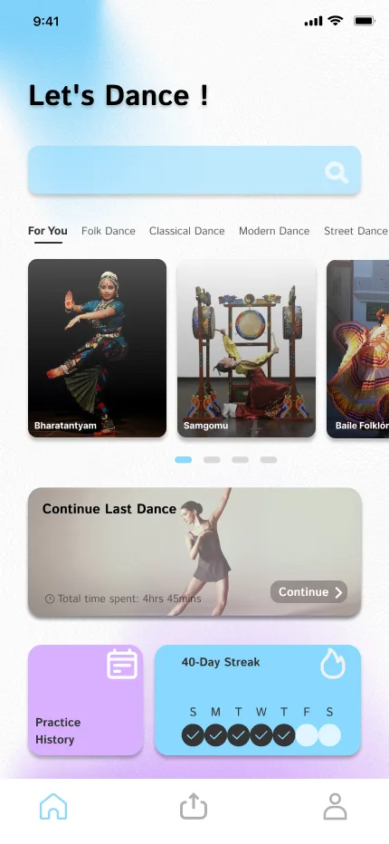</div>
        <div class="phone">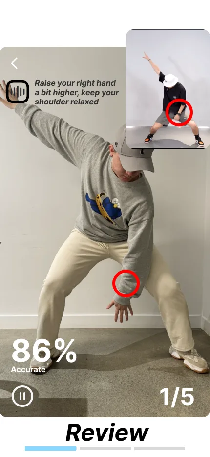</div>
        <div class="phone">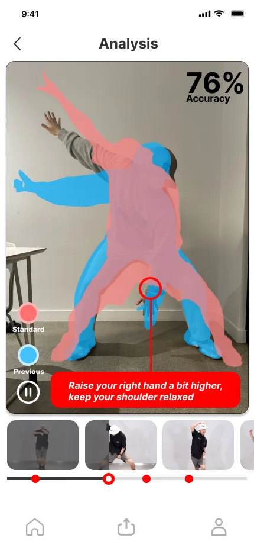</div>
      </div>
    </div>
  </section>

  <!-- 0:00 OVERVIEW -->
  <section class="seq" id="overview">
    <div class="wrap">
      <div class="seq-head">
        <span class="tc">0:00</span>
        <div>
          <h2>Overview</h2>
          <p class="sub">Most people who want to dance learn alone from videos. Nobody tells them when their form is off, and bad form leads to injuries.</p>
        </div>
      </div>
      <div class="body">
        <div class="tldr">
          <div><span class="label">Problem</span><h3>Self-learners get no feedback</h3><p>Online tutorials can't see you. Offline classes run at a fixed pace, time and place, and can't teach each student at their own level.</p></div>
          <div><span class="label">Solution</span><h3>Learn, practise, get corrected</h3><p>Choreography is split into sequences you learn at 0.5×, then 1.0×. Motion capture flags the exact joint that's off while you dance.</p></div>
          <div><span class="label">Signature feature</span><h3>Dance Ghost</h3><p>After practice, your body is overlaid with the standard pose and your previous attempt, so you can see what to fix without being interrupted mid-routine.</p></div>
          <div><span class="label">Outcome</span><h3>Easy to use, clear next step</h3><p>In prototype testing, every interviewee found the app easy to understand. Their feedback led to an Offline Dance map and AI studio suggestions, which I designed in the next iteration.</p></div>
        </div>
        <div class="facts" aria-label="Project in numbers">
          <div><b>40</b><span>hi-fi screens</span></div>
          <div><b>9</b><span>wireframes</span></div>
          <div><b>5</b><span>stakeholder groups mapped</span></div>
          <div><b>3</b><span>core flows: learn, practise, upload</span></div>
        </div>
      </div>
    </div>
  </section>

  <!-- 0:20 RESEARCH -->
  <section class="seq" id="research">
    <div class="wrap">
      <div class="seq-head">
        <span class="tc">0:20</span>
        <div>
          <h2>Who has a stake in learning to dance?</h2>
          <p class="sub">We started with interviews and a rich picture of everyone touched by dance teaching, not only the learner. The map showed where needs agree and where they conflict.</p>
        </div>
      </div>
      <div class="body">
        <div class="two">
          <div class="prose">
            <p>Our early research found that <strong>unsupervised practice raises injury risk</strong> (Bhutada &amp; Pawar, 2022). Interviewees also kept coming back to one complaint: <strong>offline classes can't teach each student at their own level</strong>.</p>
            <p>A professional dancer described the problem with existing tools more precisely. Stopping to check a video breaks the flow of practice:</p>
          </div>
          <blockquote>
            <p class="quote-big">“I don't want to be interrupted when practising; I need better consistency.”</p>
            <footer class="label">Professional dancer · initial interview</footer>
          </blockquote>
        </div>

        <figure style="margin: 40px 0 0;">
          <div class="figure">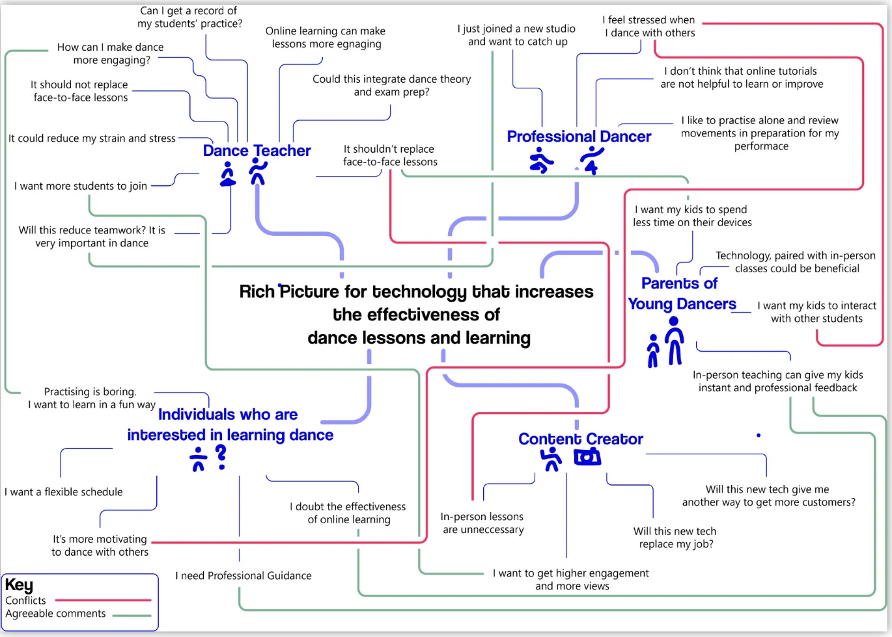</div>
          <figcaption class="label">Rich picture · red lines are conflicts, green lines are agreements · scroll sideways on mobile</figcaption>
        </figure>

        <div class="stake">
          <article><span class="role primary">Primary user</span><h3>People learning to dance</h3><p class="want">“I want a flexible schedule.”</p><p>Need structure and motivation, and doubt that online learning works.</p></article>
          <article><span class="role primary">Primary user</span><h3>Professional dancers</h3><p class="want">“I like to practise alone and review movements.”</p><p>Need precise, uninterrupted self-correction before performances.</p></article>
          <article><span class="role secondary">Secondary</span><h3>Dance teachers</h3><p class="want">“Can I get a record of my students' practice?”</p><p>Want reach and progress tracking, and worry the app will replace face-to-face lessons.</p></article>
          <article><span class="role secondary">Secondary</span><h3>Parents of young dancers</h3><p class="want">“I want my kids to interact with other students.”</p><p>Accept technology only alongside in-person classes.</p></article>
          <article><span class="role secondary">Secondary</span><h3>Content creators</h3><p class="want">“Will this new tech replace my job?”</p><p>See a new channel for views, and a new competitor.</p></article>
        </div>

        <div class="tension">
          <div class="poles"><span>efficiency &amp; flexibility</span><i aria-hidden="true"></i><span>social &amp; emotional value</span></div>
          <p>The core tension: technology makes practice personal and flexible, but teachers and parents value the teamwork and human connection of a studio. The product had to <strong>complement offline teaching, not replace it</strong>.</p>
        </div>
      </div>
    </div>
  </section>

  <!-- 0:45 PRINCIPLES -->
  <section class="seq" id="principles">
    <div class="wrap">
      <div class="seq-head">
        <span class="tc">0:45</span>
        <div>
          <h2>Design principles</h2>
          <p class="sub">Four rules guided every screen. Two come from Nielsen's usability heuristics. The other two come from how dance is actually taught in a studio.</p>
        </div>
      </div>
      <div class="body">
        <div class="principles">
          <article><span class="label">Nielsen · consistency</span><h3>Look like apps people know</h3><p>Same bottom navigation, button styles and result layout on every screen, so learning the app never competes with learning the dance.</p></article>
          <article><span class="label">Nielsen · minimalism</span><h3>One task per screen</h3><p>The sequence list shows only the step, its duration and progress (1/5). Everything else stays out of the way.</p></article>
          <article><span class="label">Studio teaching</span><h3>Break it down, then speed it up</h3><p>Teachers split routines into counts and slow them down. The app does the same: short sequences at 0.5×, then a “Last Try” at 1.0×.</p></article>
          <article><span class="label">From interviews</span><h3>Correct without interrupting</h3><p>Live corrections appear as a small tip and a ring on the joint. Detailed analysis waits until after the routine, in Dance Ghost.</p></article>
        </div>
      </div>
    </div>
  </section>

  <!-- 1:10 WIREFRAME → FINAL -->
  <section class="seq" id="iteration">
    <div class="wrap">
      <div class="seq-head">
        <span class="tc">1:10</span>
        <div>
          <h2>From wireframe to final</h2>
          <p class="sub">The mid-fidelity wireframes tested the flow. The final iteration made the feedback visual and cut the text, so the user's attention stays on their body.</p>
        </div>
      </div>
      <div class="body">
        <div class="tabs" role="tablist" aria-label="Wireframe and final comparisons" data-tabs="ba">
          <button role="tab" id="ba-t1" aria-selected="true" aria-controls="ba-p1">Step analysis</button>
          <button role="tab" id="ba-t2" aria-selected="false" aria-controls="ba-p2" tabindex="-1">Step tutorial</button>
          <button role="tab" id="ba-t3" aria-selected="false" aria-controls="ba-p3" tabindex="-1">Practice result</button>
          <button role="tab" id="ba-t4" aria-selected="false" aria-controls="ba-p4" tabindex="-1">Dance detail</button>
        </div>

        <div class="ba" role="tabpanel" id="ba-p1" aria-labelledby="ba-t1">
          <div class="compare" style="--pos:50%">
            <div class="phone"><div class="cmp">
              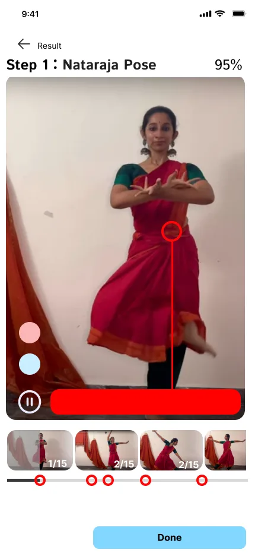
              
              <div class="divider" aria-hidden="true"><span class="knob"></span></div>
            </div></div>
            <input class="cmp-range" type="range" min="0" max="100" value="50" aria-label="Drag to compare wireframe and final: step analysis">
            <div class="cmp-labels"><span>Wireframe</span><span>Final</span></div>
          </div>
          <div class="changes">
            <h3>A red line became a ghost</h3>
            <ul>
              <li>The wireframe marked one joint with a line. It showed <em>where</em> the mistake was, but not <em>how</em> to fix it.</li>
              <li>The final overlays two bodies: the standard pose (coral) and your previous attempt (blue). This is Dance Ghost.</li>
              <li>The correction is written out in plain words (“Raise your right hand a bit higher…”), anchored to the joint.</li>
              <li>A timeline with red error markers lets the user jump straight to each mistake.</li>
            </ul>
          </div>
        </div>
        <div class="ba" role="tabpanel" id="ba-p2" aria-labelledby="ba-t2" hidden>
          <div class="compare" style="--pos:50%">
            <div class="phone"><div class="cmp">
              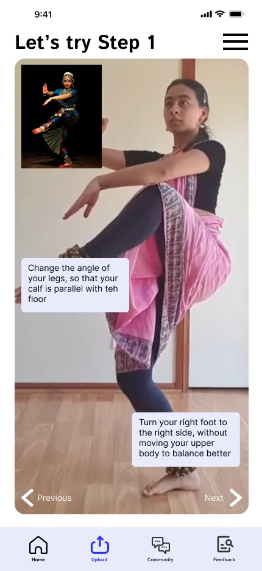
              
              <div class="divider" aria-hidden="true"><span class="knob"></span></div>
            </div></div>
            <input class="cmp-range" type="range" min="0" max="100" value="50" aria-label="Drag to compare wireframe and final: step tutorial">
            <div class="cmp-labels"><span>Wireframe</span><span>Final</span></div>
          </div>
          <div class="changes">
            <h3>Tips moved off the dancer</h3>
            <ul>
              <li>Text bubbles on the photo hid the pose they were describing.</li>
              <li>The final gives the pose a clean stage, with Overview (cultural meaning) and Tips (body instructions) in tabs below.</li>
              <li>A single <em>Start Learn</em> button replaces the hamburger menu and four-tab bar, so the next action is obvious.</li>
            </ul>
          </div>
        </div>
        <div class="ba" role="tabpanel" id="ba-p3" aria-labelledby="ba-t3" hidden>
          <div class="compare" style="--pos:50%">
            <div class="phone"><div class="cmp">
              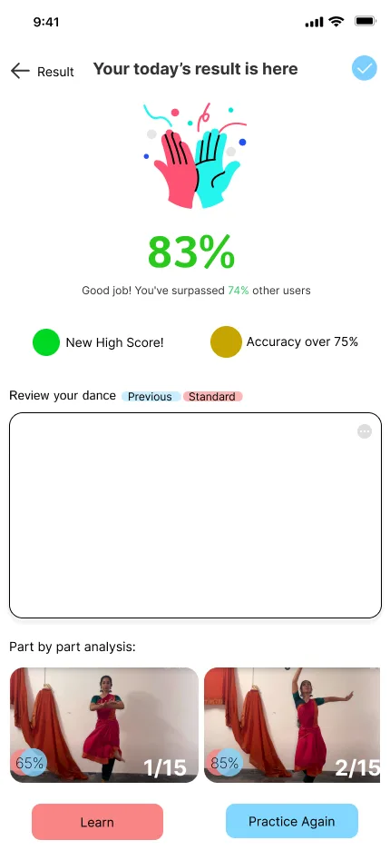
              
              <div class="divider" aria-hidden="true"><span class="knob"></span></div>
            </div></div>
            <input class="cmp-range" type="range" min="0" max="100" value="50" aria-label="Drag to compare wireframe and final: practice result">
            <div class="cmp-labels"><span>Wireframe</span><span>Final</span></div>
          </div>
          <div class="changes">
            <h3>Celebrate first, analyse second</h3>
            <ul>
              <li>The wireframe put the score and the part-by-part breakdown on one screen.</li>
              <li>The final keeps the moment simple: score, comparison with last time, and two badges.</li>
              <li>The detail sits one tap away behind <em>Continue to Analysis</em>, with <em>Restart</em> as the secondary action.</li>
            </ul>
          </div>
        </div>
        <div class="ba" role="tabpanel" id="ba-p4" aria-labelledby="ba-t4" hidden>
          <div class="compare" style="--pos:50%">
            <div class="phone"><div class="cmp">
              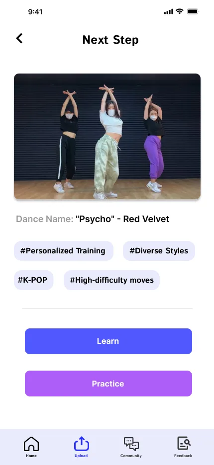
              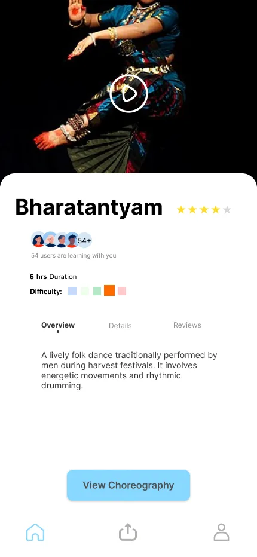
              <div class="divider" aria-hidden="true"><span class="knob"></span></div>
            </div></div>
            <input class="cmp-range" type="range" min="0" max="100" value="50" aria-label="Drag to compare wireframe and final: dance detail">
            <div class="cmp-labels"><span>Wireframe</span><span>Final</span></div>
          </div>
          <div class="changes">
            <h3>Answer “is this for me?” first</h3>
            <ul>
              <li>Hashtags described the dance but didn't answer the learner's real question: is this my level?</li>
              <li>The final shows rating, how many people are learning it, total duration and a difficulty scale before anything else.</li>
              <li>Learn and Practice moved down to the sequence list, where the choice actually matters.</li>
            </ul>
          </div>
        </div>
      </div>
    </div>
  </section>

  <!-- 1:35 EXPERIENCE -->
  <section class="seq" id="experience">
    <div class="wrap">
      <div class="seq-head">
        <span class="tc">1:35</span>
        <div>
          <h2>The core experience</h2>
          <p class="sub">Three flows cover the product: learn a dance from the library, practise it with feedback, or upload any video and learn that.</p>
        </div>
      </div>
      <div class="body">
        <div class="tabs" role="tablist" aria-label="User flows" id="flow-tabs">
          <button role="tab" aria-selected="true" aria-controls="player" data-flow="learn">Learn</button>
          <button role="tab" aria-selected="false" aria-controls="player" data-flow="practise" tabindex="-1">Practise</button>
          <button role="tab" aria-selected="false" aria-controls="player" data-flow="upload" tabindex="-1">Upload any dance</button>
          <button role="tab" aria-selected="false" aria-controls="player" data-flow="onboard" tabindex="-1">Onboarding</button>
        </div>

        <div class="player" id="player" role="tabpanel" aria-label="Interactive prototype">
          <div class="p-device">
            <div class="phone">
              <button type="button" class="screen" id="p-screen" aria-label="Next screen">
                
              </button>
            </div>
            <div class="segs" id="p-segs" aria-hidden="true"></div>
            <div class="pctl">
              <button type="button" class="ic" id="p-prev" aria-label="Previous screen">‹</button>
              <button type="button" class="ic play" id="p-play" aria-label="Play walkthrough" aria-pressed="false"><span class="i-play">▶</span><span class="i-pause">❚❚</span></button>
              <button type="button" class="ic" id="p-next" aria-label="Next screen">›</button>
              <span class="mono count" id="p-count">01 / 09</span>
            </div>
            <p class="label hint">Tap the screen to step through</p>
          </div>
          <div class="p-info">
            <p class="flow-note" id="p-note">Modelled on a studio lesson: understand the pose, break the routine into sequences, learn each one slowly, then put it together at full speed.</p>
            <ol class="steps" id="p-steps"></ol>
          </div>
        </div>

        <div class="ghost" id="ghost">
          <div class="phone"><div class="gstack" id="ghost-stack">
            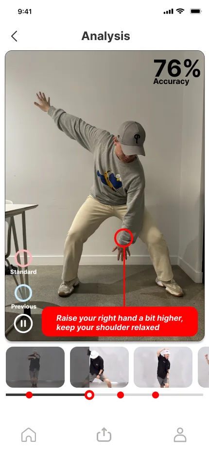
            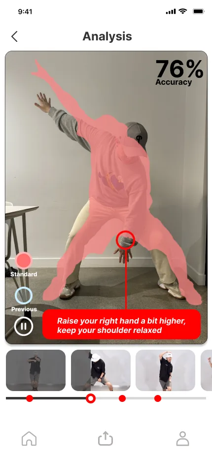
            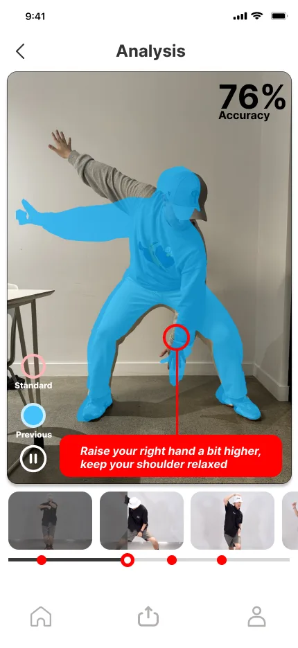
            
          </div></div>
          <div>
            <span class="label">Signature feature</span>
            <h3>Dance Ghost</h3>
            <p style="margin-top:12px; max-width:52ch;">Professional dancers told us they don't want to stop mid-routine to check a video. Dance Ghost keeps practice uninterrupted, then replays it with overlays so they can correct themselves. Try the layers:</p>
            <div class="seg" role="group" aria-label="Dance Ghost layers">
              <button type="button" data-ghost="none" aria-pressed="false"><span class="dot n"></span>You only</button>
              <button type="button" data-ghost="standard" aria-pressed="false"><span class="dot c"></span>Standard</button>
              <button type="button" data-ghost="previous" aria-pressed="false"><span class="dot b"></span>Previous you</button>
              <button type="button" data-ghost="both" aria-pressed="true"><span class="dot cb"></span>Both</button>
            </div>
            <p class="state" id="ghost-state" aria-live="polite">Both layers: see the target and your progress since last time at once.</p>
          </div>
        </div>

        <div class="tvrow">
          <div class="tv"></div>
          <div class="tv">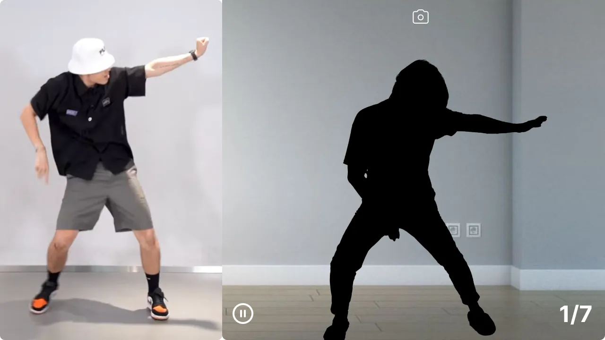</div>
          <div class="prose"><span class="label">TV mode</span><p>A phone screen is small when you're two metres away. One tap casts the lesson to a TV, with the instructor and your camera side by side.</p></div>
        </div>
      </div>
    </div>
  </section>

  <!-- 2:00 TESTING -->
  <section class="seq" id="testing">
    <div class="wrap">
      <div class="seq-head">
        <span class="tc">2:00</span>
        <div>
          <h2>Usability testing</h2>
          <p class="sub">We tested the Figma prototype with target users, combining observation with questionnaires. Every interviewee found the app easy to understand, and the testing also exposed three gaps.</p>
        </div>
      </div>
      <div class="body">
        <div class="method">
          <span class="tag">Figma interactive prototype</span>
          <span class="tag">Observation</span>
          <span class="tag">Post-test questionnaire</span>
          <span class="tag">Target users: learners &amp; dancers</span>
        </div>
        <div class="verdicts">
          <div class="verdict">
            <h3><span class="dot b" aria-hidden="true"></span>What worked</h3>
            <div class="item"><h4>Clear, familiar interface</h4><q>“It looks similar to other apps I've used, and everything is clear and precise.”</q><p>Consistency and minimalism lowered the effort of learning the app.</p></div>
            <div class="item"><h4>Modular home screen</h4><q>“I think the main interface already contains all the functions I want.”</q><p>Users found each feature straight from home, without searching.</p></div>
            <div class="item"><h4>Studio-like learning flow</h4><q>“The learning mode almost mimics an offline teaching environment, and Dance Ghost is very innovative and helpful for my dancing.”</q><p>Breaking moves into sequences and speeding them up translated studio teaching into the app.</p></div>
          </div>
          <div class="verdict">
            <h3><span class="dot c" aria-hidden="true"></span>What needed work</h3>
            <div class="item"><h4>Not enough control</h4><p>Users wanted to set their own speed, number of repetitions and how videos are split into sequences.</p></div>
            <div class="item"><h4>Feedback lacked depth</h4><p>AI corrections were immediate but not professional enough. Users still wanted expert guidance.</p></div>
            <div class="item"><h4>Learning alone feels isolating</h4><q>“I would like to add community features to interact with other dancers.”</q><p>This matched what teachers and parents said in the rich picture. The app was too focused on solo practice.</p></div>
          </div>
        </div>
      </div>
    </div>
  </section>

  <!-- 2:30 MY ITERATION -->
  <section class="seq" id="next">
    <div class="wrap">
      <div class="seq-head">
        <span class="tc">2:30</span>
        <div>
          <h2>Iteration: bringing the studio back</h2>
          <p class="sub">The two biggest gaps, social connection and professional guidance, both exist offline. So instead of more in-app features, I designed a bridge to real classes and events.</p>
        </div>
      </div>
      <div class="body">
        <span class="mine">INDIVIDUAL CONTRIBUTION · YUE WANG</span>
        <div class="prose">
          <p>I reframed the problem using Dorst's frame innovation: <strong>suspend judgement</strong> about what a dance app “should” be, and <strong>attack the context</strong> instead of the symptom. The root cause wasn't a missing chat feature. Nothing connected online practice with offline dance communities.</p>
        </div>
        <div class="iter">
          <figure><div class="shot">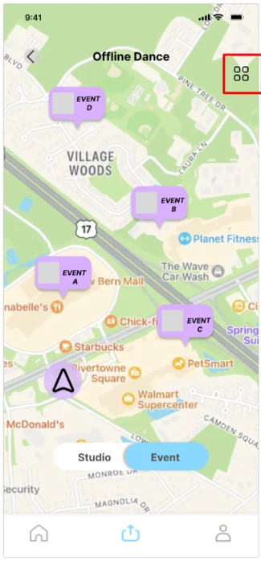</div><figcaption class="label">Offline Dance · map view</figcaption></figure>
          <figure><div class="shot"></div><figcaption class="label">Event detail</figcaption></figure>
          <figure><div class="shot"></div><figcaption class="label">AI studio suggestions</figcaption></figure>
          <div class="why">
            <div><h3>Offline Dance map</h3><p>A new module on the home screen shows nearby studios and events by distance. A layout switch lets users toggle between map and list.</p></div>
            <div><h3>Event detail → Practice or Join</h3><p>Each event links back to the app. Users can practise the choreography first, then join in person.</p></div>
            <div><h3>AI suggestions for the undecided</h3><p>For users anxious about picking a studio, the app recommends classes from their skill level, movement accuracy, fitness data and location.</p></div>
          </div>
        </div>
        <div class="two" style="margin-top:40px;">
          <div class="prose"><span class="label">Why it matters</span><p>The app moves from a solo learning tool to a platform that <strong>connects online and offline</strong>. It answers the social and professional-guidance gaps from testing directly.</p></div>
          <div class="prose"><span class="label">Who else benefits</span><p>Teachers reach new students, parents find suitable classes for their children, and creators get a new way to promote their courses. The stakeholders who saw the app as a threat now have a reason to support it.</p></div>
        </div>
      </div>
    </div>
  </section>

  <!-- 3:00 REFLECTION -->
  <section class="seq" id="reflection">
    <div class="wrap">
      <div class="seq-head">
        <span class="tc">3:00</span>
        <div>
          <h2>Reflection</h2>
          <p class="sub">What I'd keep, and what I'd do differently on a real product team.</p>
        </div>
      </div>
      <div class="body">
        <div class="learned">
          <article><h3>Usability is the product</h3><p>The most-praised moments weren't the AI. They were the familiar layout and the one-task-per-screen flow. Clarity is what made a complex technology feel approachable.</p></article>
          <article><h3>Map every stakeholder, early</h3><p>The rich picture predicted the “too isolated” feedback before testing. The people who never open the app still shape whether it succeeds.</p></article>
          <article><h3>Test hands-on, in context</h3><p>Some participants watched a demo instead of using it, and devices differed. Next time I'd run every session hands-on, on the same device, in a real practice space.</p></article>
        </div>
        <div class="next">
          <span class="label">If this shipped, I'd measure</span>
          <ul>
            <li>Accuracy change on the same sequence across sessions: does feedback actually improve form?</li>
            <li>Completion rate from Learn → Last Try → Practice: where do people drop off?</li>
            <li>Offline Dance conversions (event views → Join), to validate the online-to-offline bridge.</li>
            <li>Customisation usage (speed, repetitions), to size the demand found in testing.</li>
          </ul>
        </div>
        <div class="refs">
          <span class="label">References</span>
          <span>Bhutada, N. &amp; Pawar, P. (2022) Prevalence of Injuries and Risk Factors in Dancers. IJSR.</span>
          <span>Cross, N. (2006) Designerly Ways of Knowing. Springer.</span>
          <span>Dorst, K. (2015) Frame Innovation: Create New Thinking by Design. MIT Press.</span>
          <span>Nielsen, J. (2024) 10 Usability Heuristics for User Interface Design. Nielsen Norman Group.</span>
          <span>Valkenburg, R. &amp; Dorst, K. (1998) The reflective practice of design teams. Design Studies, 19(3).</span>
        </div>
      </div>
    </div>
  </section>
</main>

<footer class="end">
  <div class="wrap">
    <div>
      <h2>Thanks for watching.</h2>
      <p>Yue Wang · UX / Product Designer · University of Melbourne. Open to UX, UI and product design roles.</p>
    </div>
    <a class="toTop" href="#overview">↑ Back to start</a>
  </div>
</footer>

<script>
(function () {
  var REDUCED = window.matchMedia && matchMedia('(prefers-reduced-motion: reduce)').matches;
  function $(id) { return document.getElementById(id); }
  function pad(n) { return (n < 10 ? '0' : '') + n; }

  // Tabs
  document.querySelectorAll('[data-tabs]').forEach(function (list) {
    var tabs = Array.prototype.slice.call(list.querySelectorAll('[role="tab"]'));
    function select(tab, focus) {
      tabs.forEach(function (t) {
        var on = t === tab;
        t.setAttribute('aria-selected', on ? 'true' : 'false');
        t.tabIndex = on ? 0 : -1;
        var p = document.getElementById(t.getAttribute('aria-controls'));
        p.hidden = !on;
        if (on && !REDUCED) { p.classList.remove('panel-in'); void p.offsetWidth; p.classList.add('panel-in'); }
      });
      if (focus) tab.focus();
    }
    tabs.forEach(function (t, i) {
      t.addEventListener('click', function () { select(t); });
      t.addEventListener('keydown', function (e) {
        var n = null;
        if (e.key === 'ArrowRight') n = tabs[(i + 1) % tabs.length];
        if (e.key === 'ArrowLeft') n = tabs[(i - 1 + tabs.length) % tabs.length];
        if (n) { e.preventDefault(); select(n, true); }
      });
    });
  });

  // ---------- Wireframe ↔ final compare ----------
  var compares = Array.prototype.slice.call(document.querySelectorAll('.compare'));
  compares.forEach(function (c) {
    var r = c.querySelector('.cmp-range');
    function set(v) { c.style.setProperty('--pos', v + '%'); }
    r.addEventListener('input', function () { c.dataset.touched = '1'; set(r.value); });
  });
  // One affordance hint per comparison the first time it is seen: the handle sweeps to reveal both sides.
  function sweep(c) {
    if (REDUCED || c.dataset.touched || c.dataset.hinted) return;
    c.dataset.hinted = '1';
    var r = c.querySelector('.cmp-range'), keys = [[0, 50], [450, 22], [1100, 78], [1700, 50]], t0 = null;
    function ease(t) { return t < .5 ? 4 * t * t * t : 1 - Math.pow(-2 * t + 2, 3) / 2; }
    function frame(ts) {
      if (c.dataset.touched) return;
      if (t0 === null) t0 = ts;
      var t = ts - t0, v = 50;
      for (var i = 1; i < keys.length; i++) {
        if (t <= keys[i][0]) { var a = keys[i - 1], b = keys[i], k = ease((t - a[0]) / (b[0] - a[0])); v = a[1] + (b[1] - a[1]) * k; break; }
      }
      c.style.setProperty('--pos', v + '%'); r.value = Math.round(v);
      if (t < keys[keys.length - 1][0]) requestAnimationFrame(frame);
    }
    setTimeout(function () { requestAnimationFrame(frame); }, 250);
  }
  if ('IntersectionObserver' in window) {
    var cio = new IntersectionObserver(function (es) {
      es.forEach(function (e) { if (e.isIntersecting && e.target.offsetParent !== null) sweep(e.target); });
    }, { threshold: 0.6 });
    compares.forEach(function (c) { cio.observe(c); });
    // panels revealed by a tab click get their own hint
    document.querySelectorAll('[data-tabs="ba"] [role="tab"]').forEach(function (t) {
      t.addEventListener('click', function () {
        var c = $(t.getAttribute('aria-controls')).querySelector('.compare');
        if (c) setTimeout(function () { sweep(c); }, 200);
      });
    });
  }

  // ---------- Prototype player ----------
  var FLOWS = {
    learn: {
      note: 'Modelled on a studio lesson: understand the pose, break the routine into sequences, learn each one slowly, then put it together at full speed.',
      steps: [
        ['tutorial', 'Choose a dance', 'Rating, learners, duration and difficulty answer “is this my level?” before anything else.'],
        ['step-overview', 'Understand the pose', 'The Overview tells the story behind the Nataraja pose. Context makes a movement easier to remember.'],
        ['step-tips', 'Read the body cues', 'Tips are written as body instructions and kept off the photo, so the pose stays visible.'],
        ['sequence-hiphop', 'See the routine as sequences', 'Timecodes and 1/5 counters set expectations, like counting in a studio.'],
        ['learn-slow', 'Learn at 0.5×', 'Slow first. The speed badge stays on screen so users always know the tempo.'],
        ['try-again', 'Repeat until it sticks', 'Large motion text is readable from two metres away, mid-move.'],
        ['last-try', 'Last Try at 1.0×', 'Tempo only rises after the slow pass, the way teachers build a routine up.'],
        ['feedback', 'Live correction', 'One tip and one ring on the exact joint: enough to fix the move, not enough to distract.'],
        ['learn-result', 'Session summary', 'Accuracy per sequence shows exactly which part to revisit.']
      ]
    },
    practise: {
      note: 'Practice runs the routine without stopping. A small reference sits in the corner, and all analysis waits until the end.',
      steps: [
        ['practice', 'Dance uninterrupted', 'A picture-in-picture reference replaces on-screen tips while practising.'],
        ['practice-3', 'Minimal progress', 'Only the step counter and pause control. Nothing competes with the body.'],
        ['exit-confirm', 'Protect the session', 'Leaving asks for confirmation, so a stray tap never discards a full run.'],
        ['practice-result', 'Celebrate first', 'Score, change since last time and badges. Analysis is one tap away.'],
        ['ghost-both', 'Analyse with Dance Ghost', 'Standard and previous overlays, plus timeline markers for every mistake.']
      ]
    },
    upload: {
      note: 'Users aren’t limited to our library. Pick a video or paste a link, and the app turns any creator’s content into a lesson.',
      steps: [
        ['upload-pick', 'Bring any dance', 'Pick from the camera roll or paste a link from social media.'],
        ['uploading', 'Upload with clear progress', 'Speed, size and file type are visible, so waiting never feels stuck.'],
        ['upload-done', 'Ready', 'The motion text echoes the learning screens to confirm the upload finished.'],
        ['sequence-bharat', 'Auto-split into steps', 'The video becomes named steps with durations and a difficulty scale.']
      ]
    },
    onboard: {
      note: 'Sign-up asks two questions that shape coaching from day one: dance level, and any previous injuries.',
      steps: [
        ['landing', 'Welcome', 'The logo is a dancer mid-move, drawn in the app’s two Ghost colours.'],
        ['signup-level', 'Level and injury history', 'Beginner to professional, plus past injuries. Health and safety is part of setup.'],
        ['signin', 'Sign in', 'Phone or email, or continue with Google, Facebook or Twitter.'],
        ['home', 'Modular home', 'Continue last dance, practice history and a 40-day streak, each one tap away.']
      ]
    }
  };
  var player = $('player'), screen = $('p-screen'), segs = $('p-segs'), stepsEl = $('p-steps'),
      count = $('p-count'), note = $('p-note'), playBtn = $('p-play');
  var flow = 'learn', idx = 0, timer = null, DUR = 2800, busy = false;

  Object.keys(FLOWS).forEach(function (k) { FLOWS[k].steps.forEach(function (s) { var i = new Image(); i.src = 'assets/' + s[0] + '.webp'; }); });

  function render() {
    var st = FLOWS[flow].steps;
    note.textContent = FLOWS[flow].note;
    segs.innerHTML = st.map(function () { return '<span><i></i></span>'; }).join('');
    stepsEl.innerHTML = st.map(function (s, i) {
      return '<li><button type="button" data-i="' + i + '"><span class="n">' + pad(i + 1) + '</span><span class="t">' + s[1] + '</span><span class="d"><span>' + s[2] + '</span></span></button></li>';
    }).join('');
    stepsEl.querySelectorAll('button').forEach(function (b) {
      b.addEventListener('click', function () { stop(); go(+b.dataset.i); });
    });
  }
  function mark() {
    var st = FLOWS[flow].steps;
    Array.prototype.forEach.call(segs.children, function (s, i) {
      s.className = i < idx ? 'done' : (i === idx ? 'now' : '');
      if (i === idx) { var n = s.firstChild; s.replaceChild(n.cloneNode(), n); } // restart fill animation
    });
    Array.prototype.forEach.call(stepsEl.children, function (li, i) {
      li.className = i === idx ? 'now' : (i < idx ? 'seen' : '');
    });
    count.textContent = pad(idx + 1) + ' / ' + pad(st.length);
    screen.setAttribute('aria-label', 'Screen ' + (idx + 1) + ' of ' + st.length + ': ' + st[idx][1] + '. Activate for next screen.');
  }
  function go(n, dir) {
    var st = FLOWS[flow].steps;
    n = (n + st.length) % st.length;
    if (n === idx && screen.querySelector('img.cur').dataset.k === st[n][0]) { mark(); return; }
    var back = dir === undefined ? n < idx : dir < 0;
    idx = n;
    var cur = screen.querySelector('img.cur');
    var next = new Image();
    next.src = 'assets/' + st[n][0] + '.webp';
    next.alt = st[n][1];
    next.dataset.k = st[n][0];
    if (REDUCED || !cur) {
      if (cur) cur.remove();
      next.className = 'cur'; screen.appendChild(next);
    } else {
      screen.querySelectorAll('img:not(.cur)').forEach(function (x) { x.remove(); });
      screen.classList.toggle('rev', back);
      cur.className = 'out';
      next.className = 'cur in';
      screen.appendChild(next);
      setTimeout(function () { cur.remove(); next.classList.remove('in'); }, 500);
    }
    mark();
  }
  function setFlow(k) {
    flow = k; idx = -1; render();
    var st = FLOWS[flow].steps, cur = screen.querySelector('img.cur');
    idx = 0;
    if (cur) { cur.src = 'assets/' + st[0][0] + '.webp'; cur.alt = st[0][1]; cur.dataset.k = st[0][0]; }
    if (!REDUCED) { player.classList.remove('panel-in'); void player.offsetWidth; player.classList.add('panel-in'); }
    mark();
    if (timer) { clearInterval(timer); timer = setInterval(tick, DUR); }
  }
  function tick() { go(idx + 1, 1); }
  function play() {
    if (timer) return;
    player.style.setProperty('--dur', DUR + 'ms');
    player.classList.add('playing'); playBtn.setAttribute('aria-pressed', 'true'); playBtn.setAttribute('aria-label', 'Pause walkthrough');
    mark();
    timer = setInterval(tick, DUR);
  }
  function stop() {
    clearInterval(timer); timer = null;
    player.classList.remove('playing'); playBtn.setAttribute('aria-pressed', 'false'); playBtn.setAttribute('aria-label', 'Play walkthrough');
  }
  screen.querySelector('img.cur').dataset.k = 'tutorial';
  render(); mark();
  screen.addEventListener('click', function () { stop(); go(idx + 1, 1); });
  $('p-next').addEventListener('click', function () { stop(); go(idx + 1, 1); });
  $('p-prev').addEventListener('click', function () { stop(); go(idx - 1, -1); });
  playBtn.addEventListener('click', function () { timer ? stop() : play(); });
  player.addEventListener('keydown', function (e) {
    if (e.target.closest('.steps')) return;
    if (e.key === 'ArrowRight') { e.preventDefault(); stop(); go(idx + 1, 1); }
    if (e.key === 'ArrowLeft') { e.preventDefault(); stop(); go(idx - 1, -1); }
  });
  var ftabs = Array.prototype.slice.call(document.querySelectorAll('#flow-tabs [role="tab"]'));
  function pickFlow(t, focus) {
    ftabs.forEach(function (x) { var on = x === t; x.setAttribute('aria-selected', on); x.tabIndex = on ? 0 : -1; });
    if (focus) t.focus();
    setFlow(t.dataset.flow);
  }
  ftabs.forEach(function (t, i) {
    t.addEventListener('click', function () { pickFlow(t); });
    t.addEventListener('keydown', function (e) {
      var n = e.key === 'ArrowRight' ? ftabs[(i + 1) % ftabs.length] : e.key === 'ArrowLeft' ? ftabs[(i - 1 + ftabs.length) % ftabs.length] : null;
      if (n) { e.preventDefault(); pickFlow(n, true); }
    });
  });
  // Autoplay once when the player first comes into view; any interaction hands control to the viewer.
  if (!REDUCED && 'IntersectionObserver' in window) {
    var started = false;
    new IntersectionObserver(function (es) {
      es.forEach(function (e) {
        if (e.isIntersecting && !started) { started = true; play(); }
        if (!e.isIntersecting && timer) stop();
      });
    }, { threshold: 0.55 }).observe(player);
  }

  // ---------- Dance Ghost crossfade ----------
  var copy = {
    none: 'Your recording alone, with the correction ring on the joint that is off.',
    standard: 'Standard layer: the target pose in coral, laid over your body.',
    previous: 'Previous-you layer: your last attempt in blue, to see what changed.',
    both: 'Both layers: see the target and your progress since last time at once.'
  };
  var state = $('ghost-state'), layers = $('ghost-stack').querySelectorAll('img');
  document.querySelectorAll('[data-ghost]').forEach(function (b) {
    b.addEventListener('click', function () {
      var k = b.getAttribute('data-ghost');
      document.querySelectorAll('[data-ghost]').forEach(function (x) { x.setAttribute('aria-pressed', x === b ? 'true' : 'false'); });
      Array.prototype.forEach.call(layers, function (im) { im.classList.toggle('on', im.dataset.layer === k); });
      state.textContent = copy[k];
    });
  });

  // ---------- Reading progress + scrollspy ----------
  var ids = ['overview', 'research', 'principles', 'iteration', 'experience', 'testing', 'next', 'reflection'];
  var secs = ids.map($), bar = $('progress');
  bar.innerHTML = ids.map(function () { return '<span><i></i></span>'; }).join('');
  var fills = bar.querySelectorAll('i'), links = {};
  document.querySelectorAll('.nav a').forEach(function (a) { links[a.getAttribute('href').slice(1)] = a; });
  var ticking = false;
  function onScroll() {
    ticking = false;
    var y = window.scrollY + 80, active = null;
    secs.forEach(function (s, i) {
      var top = s.offsetTop, h = s.offsetHeight;
      var f = Math.max(0, Math.min(1, (y - top) / h));
      fills[i].style.transform = 'scaleX(' + f + ')';
      if (y >= top && y < top + h) active = ids[i];
    });
    Object.keys(links).forEach(function (k) { links[k].classList.toggle('active', k === active); });
  }
  window.addEventListener('scroll', function () { if (!ticking) { ticking = true; requestAnimationFrame(onScroll); } }, { passive: true });
  window.addEventListener('resize', onScroll);
  onScroll();
})();
</script>
